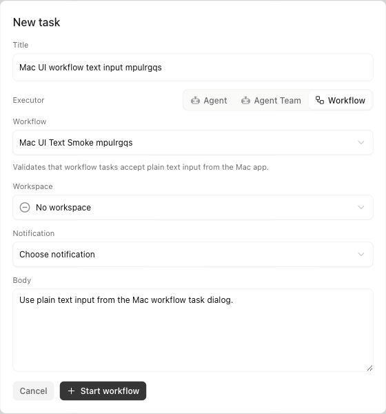
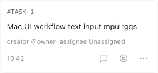
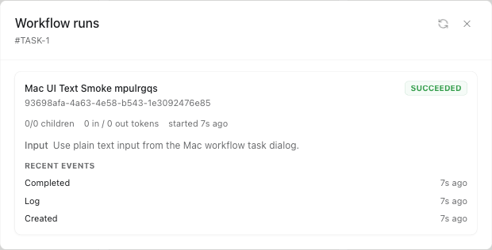

1. 结论摘要
已经确定的架构方向
WorkflowDefinition是全局 file-backed package，不进数据库作为源数据。Task.executor支持agent、workflow两类执行器。WorkflowRun是一次执行实例，绑定外层 Task。- Workflow 控制流由用户 TypeScript 和
@garyx/workflowSDK 执行，Gateway 不解释 workflow 脚本。 - 子执行默认继承 Task workspace，除非调用方显式覆盖。
评审重点
- 定义和执行分离是否清晰。
- 文件系统、数据库和 thread store 的职责是否合理。
- Workflow 是否自然接入现有 Task 生命周期。
- 结构化结果是否是 thread-run 通用能力，而不是 workflow 特例。
- Mac UI 是否只做管理和观测，不引入新的业务概念。
2. 目标和非目标
2.1 产品目标
- 让 Workflow 成为 Agent 之外的另一类执行能力。
- 用户创建 Task 时可以选择 Workflow；Task 仍然是产品上的执行入口和 review 单元。
- Workflow 内部调用 agent 时保留完整观测：阶段、节点、child thread、结构化结果、事件流和最终结果。
- Workflow 定义可复用、可复制、可版本化，并以文件包形式存在。
- CLI、SDK 和 Mac UI 都走同一套 Gateway API，不做平行实现。
2.2 技术非目标
- 不实现 Garyx 自己的 workflow-script interpreter。
- 不直接执行 Claude Code 生成的 workflow DSL 文件作为 Garyx 核心模型。
- 不把 workflow 内部每一个节点建成 Task。
- 不把 WorkflowDefinition 存成数据库主数据。
- 不做多租户权限/RBAC 设计；Garyx 当前按本地单人部署处理。
- 不从 workflow definition 的 input metadata 生成复杂表单；产品输入复用 Task 正文。
2.3 真实用例
| 用例 | 输入 | Workflow 行为 | 审阅证据 |
|---|---|---|---|
| Mac UI 文本输入 smoke | 一个普通文本请求 | 创建 Workflow-backed Task，entrypoint 收到 string input，SDK finish 成功。 | 真实 E2E：#TASK-1，93698afa-4a63-4e58-b543-1e3092476e85。 |
| Development Loop | 工程目标文本，可选高级 JSON knobs | planner、implementer、reviewer 三个 child agent 节点，保留可观测 child threads。 | Package：packages/garyx-workflow/examples/development-loop。 |
| Deep Research parity | 研究问题文本 | scope、search、fetch、verify、synthesize 由用户 TypeScript 编排，Garyx 记录节点和结果。 | 验证目标是流程和效果对齐，不是执行 Claude Code DSL。 |
3. 领域模型
3.0 系统架构图
3.0.1 核心对象关系图
3.1 WorkflowDefinition
WorkflowDefinition 是可复用能力，和 Agent 同级。它是全局对象，不绑定 workspace。workspace 是一次 Task 执行的上下文，而不是 definition identity。
| 属性 | 说明 | 来源 |
|---|---|---|
workflowId | 稳定定义 ID，例如 development-loop | garyx.workflow.json |
version | 定义版本；运行时会保存版本和快照 | garyx.workflow.json |
name / description | 管理界面展示 | garyx.workflow.json |
input | 文本输入 metadata，例如 placeholder；不是 schema | garyx.workflow.json |
entrypoint | 包内入口，当前支持 Node entrypoint 和 local command | garyx.workflow.json |
defaults | 默认 agent、workspace 等执行默认值 | garyx.workflow.json |
3.2 Task
Task 是用户可见的执行单元和 review 单元。Workflow-backed Task 只是把 executor 从 Agent 换成 WorkflowDefinition；Task 生命周期继续使用现有 in_progress 到 in_review 的产品语义。
{
"title": "Implement Mac workflow UI",
"body": "Implement the workflow management and observability UI",
"executor": {
"type": "workflow",
"workflowId": "development-loop"
},
"workspaceDir": "/Users/test/project"
}3.3 WorkflowRun
WorkflowRun 是一次技术执行实例，绑定一个外层 Task。一个 Task 未来可以有多次 run，用于 retry 或 rerun；历史 run 不应被新 run 覆盖。
- 保存
workflowRunId、taskId、taskThreadId。 - 保存
workflowDefinitionId、版本和 definition snapshot。 - 保存 status、input、result、error、开始/结束时间、聚合指标。
- 提供
events、children和 drilldown API。
3.4 WorkflowNode 与 Child Thread
Workflow 内部节点是执行证据，不是产品 Task。常见节点来自 SDK agent() 调用。每个节点创建一个隐藏 child thread，child thread 承载 provider transcript、tool calls、structured result schema 和最终结果。
3.5 模型定义摘要
type TaskExecutor =
| { type: "agent"; agentId: string }
| { type: "workflow"; workflowId: string; workflowVersion?: number };
type WorkflowDefinition = {
workflowId: string;
version: number;
name: string;
description?: string;
input: { placeholder?: string };
entrypoint: { type: "node"; path: string } | { type: "local_command"; command: string; args?: string[] };
defaults?: { workspaceDir?: string; agentId?: string };
packageDir: string;
};
type WorkflowRun = {
workflowRunId: string;
taskId: string;
taskThreadId: string;
workflowDefinitionId: string;
workflowDefinitionVersion: number;
status: "queued" | "running" | "succeeded" | "failed" | "cancelled";
input: string | unknown;
result?: unknown;
error?: string;
};
type WorkflowChildRun = {
workflowChildRunId: string;
workflowRunId: string;
phaseTitle?: string;
label?: string;
orderIndex: number;
status: "queued" | "running" | "succeeded" | "failed" | "cancelled" | "skipped";
threadId?: string;
result?: unknown;
error?: string;
};4. 文件与数据库边界
4.1 总原则
| 数据 | 系统 of record | 原因 |
|---|---|---|
| Workflow package | 文件系统 ~/.garyx/workflows/* | 定义是代码和 manifest 的组合，适合复制、版本管理、人工审查。 |
| WorkflowRun | Gateway DB | 运行时状态、聚合指标、Task 关联需要查询和分页。 |
| Workflow child runs | Gateway DB | 节点状态、phase、label、order、result、error。 |
| Workflow events | Gateway DB | 观测事件流，使用递增 cursor 支持 follow。 |
| Thread records | Router thread store | Transcript、workspace、provider run metadata 属于 thread 系统。 |
4.2 File-backed package 结构
~/.garyx/workflows/development-loop/
garyx.workflow.json
workflow.mjs
README.md
prompts/
schemas/{
"workflowId": "development-loop",
"version": 1,
"name": "Development Loop",
"description": "Plan, implement, review and report a coding change",
"input": {
"placeholder": "Describe the engineering goal"
},
"entrypoint": {
"type": "node",
"path": "./workflow.mjs"
},
"defaults": {
"workspaceDir": "/Users/test/project",
"agentId": "claude"
}
}4.3 坏包隔离
Workflow definition list 必须隔离坏包：一个 manifest 损坏、entrypoint 缺失或 package 不完整，不应让整个列表不可用，也不应影响其他 workflow 的执行。当前实现中，list 会跳过坏包并记录 warning；按 ID get/execute 只在目标包本身坏时失败。
5. 端到端执行链路
5.0 流程图
5.0.1 时序图
5.1 创建和安装定义
- 开发者在本地目录编写 workflow package。
- 通过 CLI 执行
garyx workflow definition upsert --file <package>。 - CLI 将 package copy 到 Garyx workflow root。
- Gateway list/get API 从 workflow root 读取 manifest 并返回定义。
5.2 创建 Workflow-backed Task
- 用户在 CLI 或 Mac UI 创建 Task，executor 选择 Workflow。
- Gateway 读取目标 file-backed definition，保存 definition id/version/snapshot 到执行上下文。
- Gateway 创建外层 Task thread，并把 Task workspace 写入 thread record。
- Gateway 启动 workflow entrypoint 进程，注入
GARYX_*环境变量。 - Workflow entrypoint 通过 SDK 调用
workflow()创建WorkflowRun。
5.3 运行内部 agent 节点
- 用户代码调用
phase()、agent()、parallel()或pipeline()。 - SDK 调用 Gateway API 创建 workflow child run。
- Gateway 创建隐藏 child thread，并写入 workflow classification metadata。
- Gateway 通过 bridge/provider 执行该 child thread 的 agent run。
- 结构化结果通过当前 child thread 的 MCP context 提交。
- SDK 将节点结果返回给用户 TypeScript 控制流。
5.4 结束和 Task Review
- 用户代码返回最终结果，SDK 调用 finish API。
- Gateway 将
WorkflowRun标记为succeeded、failed或cancelled。 - 如果外层 Task 仍是
in_progress，Gateway 将其推进到in_review。 - 用户在 Task detail 查看 WorkflowRun、children、events 和每个 child thread transcript。
workspace_dir、显式 workflow input 中的 workspaceDir/workspace_dir、definition defaults 中的 workspaceDir/workspace_dir。具体 child agent 调用只有在显式传入 workspace 时才覆盖。
6. SDK 与 CLI
6.1 SDK 职责
@garyx/workflow 是对 Gateway 能力的薄封装。它不隐藏用户代码的控制流，也不把所有 CLI 能力包装成一套通用 SDK。它只服务于 Workflow 运行时需要的观测和 child agent 执行。
| 能力 | 说明 |
|---|---|
workflow() | 启动/绑定一次 WorkflowRun，管理 finish/cancel/error 上报。 |
phase() | 写入阶段事件和默认 phase label。 |
agent() | 创建一个可观测 child run 和 hidden child thread。 |
parallel() | 用户代码层面的并发组合，Gateway 仍做运行时限流。 |
pipeline() | 按 item 流水线执行，适合 search/fetch/verify 等流程。 |
schema() | 声明结构化结果 schema，最终交给 thread-run structured result 能力。 |
6.2 CLI 职责
CLI 是用户和自动化创建、运行、观测 Workflow 的稳定入口。CLI 不直接写数据库，而是调用 Gateway API。
# 安装定义
garyx workflow definition upsert --file packages/garyx-workflow/examples/development-loop
# 查看定义
garyx workflow definition list
garyx workflow definition get development-loop
# 创建 Workflow-backed Task，文本优先
garyx task create \
--title "Run development workflow" \
--workflow development-loop \
--workspace-dir /Users/test/project \
--input "Implement the Mac workflow UI" \
--notify none
# 观测
garyx task get '#TASK-123'
garyx workflow get run-abc
garyx workflow events run-abc6.3 文本优先输入
产品层面 Workflow 复用 Task 正文作为大文本输入，不在 Workflow tab 里再放一套输入框。CLI 只接受单个纯文本 --input；需要结构化数据时，Workflow 的第一步应使用 Agent 把文本结构化，而不是引入结构化输入入口。
7. 接口定义
7.1 Gateway HTTP API
| 接口 | 用途 | 关键字段 |
|---|---|---|
GET /api/workflow-definitions | 列出 file-backed workflow packages。 | workflowDefinitions[]，坏包跳过并记录 warn。 |
GET /api/workflow-definitions/:workflowId | 读取单个 workflow definition。 | workflowDefinition，目标包坏时返回错误。 |
POST /api/tasks | 创建 Task；executor 可为 workflow。 | executor.type="workflow"、workflowId、body 作为默认 input、workspaceDir。 |
POST /api/workflows/sdk | SDK 创建 WorkflowRun。 | taskId、taskThreadId、definition snapshot、input。 |
POST /api/workflows/sdk/:runId/agents | SDK 执行一个 child agent 节点。 | prompt、phase、label、schema、workspaceDir?。 |
POST /api/workflows/sdk/:runId/events | SDK 写观测事件。 | eventType、payload。 |
POST /api/workflows/sdk/:runId/finish | SDK 完成 WorkflowRun。 | status、result、error。 |
GET /api/workflows/:runId | 查看 run 详情。 | workflow、children、events。 |
GET /api/workflows/:runId/events | 分页读取事件流。 | after cursor、limit。 |
GET /api/tasks/:taskId | Task detail routing。 | 返回 Task backing thread_id；workflow task 的 thread_id 即唯一 WorkflowRun id。 |
7.2 CLI API 映射
garyx workflow definition upsert --file <package> # copy package, then GET definition
garyx workflow definition list # GET /api/workflow-definitions
garyx workflow definition get id # GET /api/workflow-definitions/:id
garyx task create --workflow id --input "..." --workspace-dir /Users/test/project
garyx workflow get run-id
garyx workflow events run-id --after 427.3 SDK API 映射
await workflow({ name, run }) // POST /api/workflows/sdk + finish
phase("Search") // local phase state + event
await ctx.log("event", payload) // POST /api/workflows/sdk/:runId/events
await agent(prompt, { schema }) // POST /api/workflows/sdk/:runId/agents
await parallel([() => agent(...)]); // user TypeScript concurrency
await pipeline(items, stageA, stageB) // user TypeScript pipeline8. 结构化结果设计
8.1 设计原则
submit_result 工具。
8.2 为什么不使用 workflow token
- thread id 已经是当前执行上下文，足以定位本次 run 和 schema。
- token 会把结构化结果绑定到 workflow 特例，削弱 thread-run 通用能力。
- 直接根据 thread metadata 生成工具 schema，更符合 MCP 当前上下文模型。
- 结果工具不应是
{ payload: ... }大 JSON 包装，而应暴露 schema 的直接字段，提升模型调用可靠性和可读性。
8.3 执行路径
- SDK
agent(prompt, { schema })将 schema 传给 Gateway。 - Gateway 创建 child thread，并把 schema 写入 thread metadata。
- Provider 执行该 child thread 时访问 MCP。
- MCP 从当前 thread context 读取 schema，动态返回
submit_result工具定义。 - 模型调用
submit_result，参数是 schema 的 direct fields。 - Gateway 校验 schema、写入 child run result，并完成节点。
9. 可观测性和产品 UI
9.1 观测对象
| 对象 | 展示位置 | 用途 |
|---|---|---|
| WorkflowDefinition | Workflow 管理页 / Task 创建选择器 | 展示可用 workflow 能力。 |
| Task | Task 列表与 Task detail | 用户工作单元、review、通知。 |
| WorkflowRun | Task detail drilldown / workflow run detail | 一次执行的总体状态和结果。 |
| Workflow child run | WorkflowRun detail | 阶段、节点状态、耗时、结构化结果、错误。 |
| Child thread | 从节点跳转打开 | 完整 provider transcript 和工具调用证据。 |
| Workflow events | 事件流 / CLI workflow events | 按时间线追踪 start、phase、child、finish。 |
9.2 Mac UI 信息架构
- Task 创建时的执行器选择应是两个同级 tab：Agent、Workflow。
- Workflow tab 只展示 file-backed definition 列表；Workflow input 复用 Task 正文。
- Task detail 展示 WorkflowRunsPanel：run 状态、children、events、错误和 child thread 链接。
- Mac UI 只做管理和观测，不发明新执行概念。
9.3 Hidden child thread 规则
- Child thread 默认不出现在 Recent 和默认 thread list。
- Child thread 必须能从 WorkflowRun drilldown 打开。
- 隐藏状态依赖 top-level metadata，不只依赖嵌套 metadata，避免浅写入时重新暴露。
10. 真实页面截图
以下截图来自真实 Electron 页面和真实 Gateway run。为了满足公开仓库 hygiene，文档只嵌入局部 locator 截图：创建面板、合成任务卡、Workflow Runs 观测面板。完整页面截图保留在本地 desktop/garyx-desktop/test-artifacts/，不提交，因为它可能包含用户真实任务列表。



10.1 截图复现命令
cargo build --release -p garyx
cd desktop/garyx-desktop
npm run test:workflow-text-smoke| 本次真实 E2E 证据 | 值 |
|---|---|
| Task | #TASK-1 |
| WorkflowRun | 93698afa-4a63-4e58-b543-1e3092476e85 |
| Input type | string |
| 截图脚本 | desktop/garyx-desktop/scripts/workflow-text-smoke.mjs |
11. 故障语义和恢复
11.1 状态映射
| WorkflowRun 状态 | Task 状态 | 说明 |
|---|---|---|
running | in_progress | 执行中。 |
succeeded | in_review | 等待用户 review。 |
failed | in_review | 失败也进入 review，保留错误证据。 |
cancelled | in_review | 取消后仍可查看执行历史。 |
11.2 关键故障处理
- Gateway restart：非终态 WorkflowRun 变为 failed，并将关联 Task 推进到
in_review。 - Entrypoint 退出但没有创建 run：Task 推进到
in_review，避免永久in_progress。 - 坏 workflow package：list 隔离坏包；目标 package 本身坏时只影响该 workflow。
- Child provider error：对应 child run failed，optional child 可由 SDK 控制为非致命。
- 结构化结果缺失或不合法：child failed，并写入可观测错误。
- 取消：run 和未完成 children 转为 cancelled，迟到结果不覆盖终态。
11.3 并发和容量
Workflow SDK 可发起并发 child agents；Gateway 侧用 workflow scheduler 控制每个 workflow 和全局 child 并发，同时 bridge provider run limiter 继续约束实际 provider 执行容量。这样并发表达在用户代码里，容量控制在 Gateway 和 bridge 层。
12. 验证矩阵
12.1 代码级验证
| 验证命令 | 覆盖范围 |
|---|---|
cargo test -p garyx-gateway --lib workflows::tests | Workflow routes、SDK lifecycle、child run、structured result、restart/cancel、file-backed package。 |
cargo test -p garyx-gateway --lib workflow_backed_task_creation_dispatches_workflow_entrypoint | Task 创建 Workflow executor、entrypoint dispatch、workspace 继承。 |
cargo check -p garyx | Gateway + CLI 编译集成。 |
npm run typecheck in packages/garyx-workflow | SDK 类型。 |
npx tsc --noEmit in desktop/garyx-desktop | Mac UI contract 和 renderer/main/preload 类型。 |
git diff --check | Whitespace hygiene。 |
12.2 端到端验证
- 安装 workflow package：
garyx workflow definition upsert --file ...。 - 创建 Workflow-backed Task：
garyx task create --workflow ... --input ...。 - 验证 Task 推进到
in_review。 - 验证
garyx task get能看到 WorkflowRun drilldown。 - 验证 child threads 不出现在 Recent，但可以从 run detail 打开。
- 验证结构化结果通过 thread metadata schema 提交，而不是 token。
- 验证 gateway restart 后 orphaned run 会失败并推动 Task review。
13. 风险和后续工作
| 事项 | 当前状态 | 建议 |
|---|---|---|
| Workflow package 质量 | 已隔离 坏包不会拖垮列表或其他 workflow。 | 后续可在管理 UI 显示 invalid packages 和错误原因。 |
| Entrypoint stdout/stderr | 待增强 当前主要依赖 SDK events 和 run error。 | 建议将 entrypoint 启动前错误和 stderr 摘要写入 Task/WorkflowRun evidence。 |
| Workflow retry / rerun | 产品动作未完整设计 数据模型支持多 run。 | 后续添加 Task detail 上的 rerun action，创建新 run，不覆盖历史。 |
| Definition version 策略 | 基础版本字段已存在 严格递增规则可继续收敛。 | 建议 install/upsert 时校验 version 递增或显式允许 overwrite。 |
| 结构化结果动态 MCP | 架构方向明确 thread metadata 驱动。 | 继续禁止 workflow-specific token 和 payload wrapper，保持 thread-run 通用能力。 |
| Mac UI 深度 | 基础管理和观测已接入 | 后续增强 run timeline、错误解释、child transcript deep link 和 invalid package 管理。 |